Diaphragm Oil Seal (4WD) Installation |
| 1. Install Diaphragm Oil Seal |
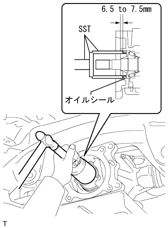 |
Using SST and a hammer, tap in a new diaphragm oil seal into the rear differential carrier assembly to the standard depth.
Apply a light coat of MP grease No.2 to the oil seal lip.
| 2. Install Transmission Coupling Shim |
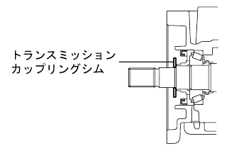 |
Install the transmission coupling shim to the rear differential carrier assembly.
| 3. Install Transmission Coupling Conical Spring Washer |
 |
Install the transmission coupling conical spring washer to the rear differential carrier assembly.
| 4. Install Transmission Coupling Assembly |
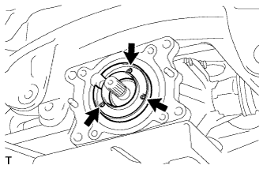 |
Using a socket hexagon wrench 5, install the yoke to the differential carrier assembly with the 3 bolts.
 |
Install a new O-ring to the solenoid.
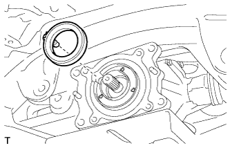 |
Install the solenoid to the yoke.
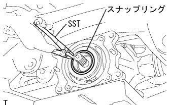 |
Using SST, install a new snap ring.
Using a scraper, clean off the seal packing adhering to the rear differential carrier and transmission coupling assembly, then remove oil with cleaning solvent or equivalent.
 |
Apply seal packing 1281 to the area of the transmission coupling assembly shown in the illustration.
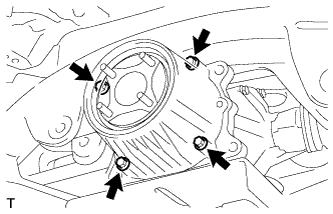 |
Install the transmission coupling assembly to the rear differential carrier assembly with the 4 bolts.
| 5. Install Differential Carrier Assembly Rear |
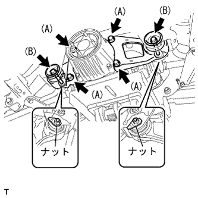 |
Install the rear differential support assembly No.1 and rear differential support assembly No.2 with 6 new bolts and 2 nuts.
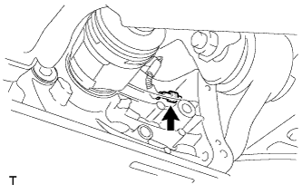 |
Connect the connector.
| 6. Temporarily Tighten Propeller Shaft with Center Bearing Assembly |
 |
Align the matchmarks on the transfer assembly and propeller shaft assembly.
Temporarily tighten the propeller with center bearing shaft assembly with 4 new nuts and 4 washers.
 |
Align the matchmarks on the differential carrier assembly and propeller shaft assembly.
Temporarily tighten the propeller with center bearing shaft assembly with 4 new nuts and 4 washers.
 |
Temporarily tighten the center support bearing assembly with the 2 bolts, with the center support bearing washers in place.
| 7. Fully Tighten Propeller Shaft with Center Bearing Assembly |
Fully tighten the 4 nuts installing the propeller shaft assembly to the transfer assembly.
Fully tighten the 4 nuts installing the propeller shaft assembly to the differential carrier assembly.
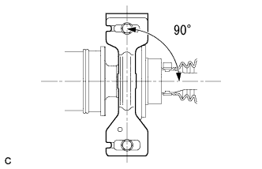 |
Check that the housing center line of the center support bearing assembly is at a right angle to the propeller shaft axis.
Fully tighten the 2 installation bolts of the center support bearing assembly.
| 8. Inspect and Adjust Joint Angle |
Before measuring the angle, settle each part using the following procedure.
Rotate the propeller shaft several times by hand.
Place a jack under the differential and move it up and down.
Using SST, measure the installation angle of the intermediate shaft assembly (A in the illustration).
| Angle | |
|---|---|
| A | -2°46’ ± 1° |
Using SST, measure the installation angle between the intermediate shaft assembly (A in the illustration) and propeller shaft assembly (B in the illustration).
| Angle | |
|---|---|
| A-B | 1°29’ ± 1°30’ |
Using SST, measure the installation angle between the propeller shaft assembly (B in the illustration) and differential (C in the illustration).
| Angle | |
|---|---|
| B-C | 2°10’ ± 1° |
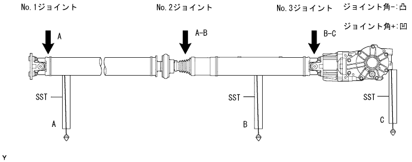
If the result is not as specified, replace the adjusting washers at the center support bearing with appropriate ones.
| Part No. | Thickness (mm) |
|---|---|
| 90201-10123 | 2.0 |
| 90201-10081 | 4.5 |
| 90201-10083 | 6.5 |
| 9. Install Front Floor Heat Insulator NO.2 |
 |
Install the front floor heat insulator No.2 with the 4 bolts.
| 10. Install Fuel Tank Protector NO.1 |
 |
Install the fuel tank protector No.1 with the 3 clips.
| 11. Install Fuel Emission Tube NO.1 |
 |
Align the axes of the pipe and connector, and insert until a "click" sound is heard.
| 12. Install Charcoal Canister Outlet Hose NO.1 |
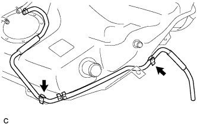 |
Connect the 2 clips and install the charcoal canister outlet hose No.1 to the fuel tank.
| 13. Install Fuel Tank to Filler Pipe Hose |
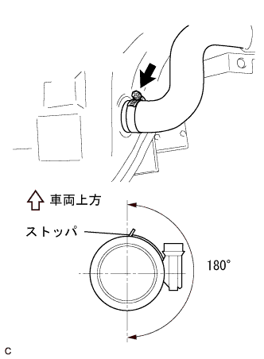 |
Install the fuel tank to filler pipe hose as shown in the illustration.
| 14. Install Fuel Tank Breather Hose |
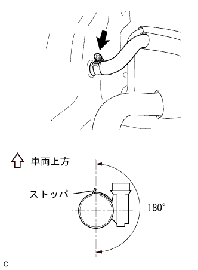 |
Install the fuel tank breather hose as shown in the illustration.
| 15. Install Fuel Tank Assembly |
Clean and degrease the bolt holes.
Set the fuel tank and 2 fuel tank bands on an engine lifter.
 |
While operating the engine lifter, slowly install the fuel tank to the vehicle.
 |
Secure the fuel tank with the 4 bolts and 2 fuel tank bands.
| 16. Connect Parking Brake Cable Assembly |
 |
Connect the parking brake cable with the 2 bolts.
| 17. Connect Fuel Tank Main Tube |
 |
Align the axes of the pipe and connector, and insert until a "click" sound is heard.
| 18. Connect Fuel Hose |
 |
Align the axes of the pipe and connector, and insert until a "click" sound is heard.
| 19. Connect Fuel Tank to Filler Pipe Hose |
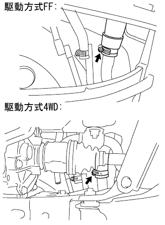 |
Connect the fuel tank to filler pipe hose as shown in the illustration, and secure it with the clamp.
| 20. Connect Fuel Tank Breather Hose |
 |
Connect the fuel tank breather hose as shown in the illustration, and secure it with the clamp.
Connect the charcoal canister outlet hose No.1.
| 21. Install Exhaust Pipe Assembly Center |
 |
Compression Spring Inspection
Using a vernier caliper, measure the free length of the compression spring.
 |
Gasket Installation
Insert a new gasket into the exhaust center pipe assembly as far as it will go by hand.
Install a new gasket to the exhaust pipe assembly front.
Install the exhaust center pipe assembly with the 3 exhaust pipe supports.
 |
Install the exhaust center pipe assembly to the exhaust pipe assembly front with the 2 bolts.
 |
Install the exhaust center pipe assembly to the exhaust tail pipe assembly with the bolts and 2 compression springs.
| 22. Install Fuel Sender Gauge Assembly |
 |
Install the fuel sender gauge assembly with the 5 screws.
| 23. Install Rear Floor Service Hole Cover NO.2 |
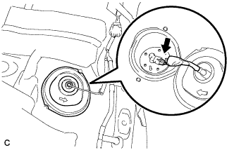 |
Connect the connector.
Install the service hole cover using new butyl tape.
| 24. Install Fuel Suction Tube Assembly (with Pump & Gauge) |
| 25. Install Fuel Tank Vent Tube Set Plate |
| 26. Connect Fuel Emission Tube NO.1 |
| 27. Connect Fuel Hose |
| 28. Connect Charcoal Canister Outlet Hose NO.1 |
| 29. Connect Fuel Tank Main Tube |
| 30. Add Fuel |
| 31. Install Rear Floor Service Hole Cover |
| 32. Add Differential Oil |
Using a socket hexagon wrench 10mm, remove the rear differential filler plug and gasket.
Add Hypoid Gear Oil SX.
Check the oil level.
Using a socket hexagon wrench 10mm, tighten the rear differential filler plug with a new gasket.
| 33. Inspect for Differential Oil Leaks |
| 34. Install Rear Seat Outer Belt Assembly Center (RH Seat Position) |
 |
Install the rear seat outer belt assembly center, rear seat inner belt assembly and washer with the bolt.
| 35. Install Rear Seat Assembly RH |
 |
Set the rear seat assembly RH in the vehicle, and install the 2 rear side bolts in the order inner → outer.
 |
Raise the seatback, and install the 2 front side bolts of the rear seat assembly RH in the order inner → outer.
| 36. Install Rear Seat Cushion Hinge Cover NO.2 (RH Seat Position) |
 |
Engage the 4 claws and install the rear seat cushion hinge cover NO.2.
| 37. Install Rear Seat Cushion Hinge Cover NO.1 (RH Seat Position) |
 |
Engage the 4 claws and install the rear seat cushion hinge cover NO.1.
| 38. Remove Rear Seat Headrest Assembly Center (RH Seat Position) |
| 39. Install Rear Seat Headrest Assembly (RH Seat Position) |
| 40. Install Rear Door Scuff Plate RH |
 |
Engage the 8 claws to install the rear door scuff plate RH.
| 41. Install Rear Seat Assembly LH |
 |
Set the rear seat assembly LH in the vehicle, and install the 2 rear side bolts in the order inner → outer.
 |
Raise the seatback, and install the 2 front side bolts of the rear seat assembly LH in the order inner → outer.
| 42. Install Rear Seat Cushion Hinge Cover NO.2 (LH Seat Position) |
 |
Engage the 4 claws to install the rear seat cushion hinge cover NO.2.
| 43. Install Rear Seat Cushion Hinge Cover NO.1 (LH Seat Position) |
 |
Engage the 4 claws and install the rear seat cushion hinge cover NO.1.
| 44. Install Rear Seat Headrest Assembly (LH Seat Position) |
| 45. Install Rear Door Scuff Plate LH |
| 46. Connect Battery Negative Terminal |
| 47. Inspect for Exhaust Gas Leaks |
| 48. Inspect for Fuel Leaks |